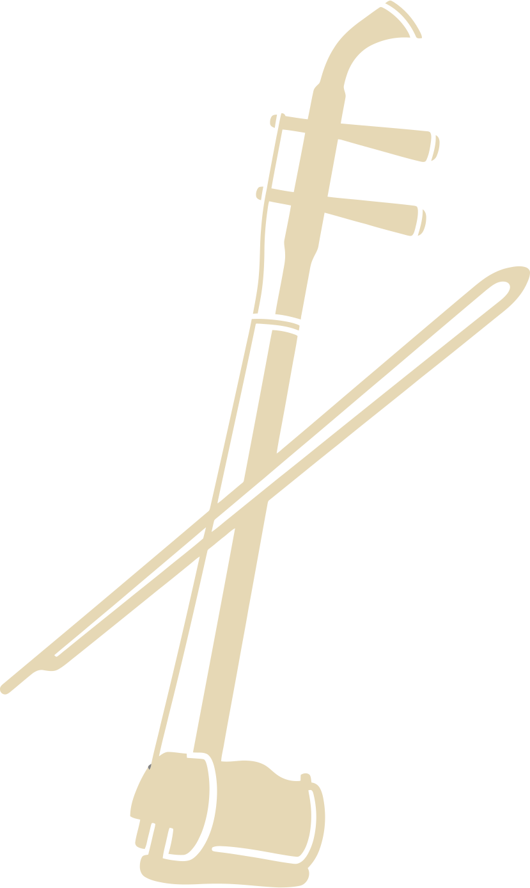

弦乐分类
中国传统弦乐器主要分为弹拨类和拉弦类。弹拨乐器历史悠久，可追溯至秦汉时期；拉弦乐器则相对较晚，大约在唐宋时期逐渐发展成熟。
历史沿革
琵琶类乐器最早可追溯至秦汉时期的"弦鼗"，后经丝绸之路传入的波斯乐器"乌德"影响，逐渐演变为今天的琵琶形制。
琵琶 - 四弦四柱，横抱弹拨

二胡 - 二弦拉奏，音色悠扬
中国传统弦乐
中国传统弦乐以"韵"为核心审美特征，注重音色的变化和余韵的表达。琵琶音色清脆明亮，表现力丰富；二胡音色柔美悠扬，擅长表现哀婉情感。这些特点与中国传统美学追求的"含蓄"、"意境"相契合。
音色特点
琵琶音色清脆明亮，表现力丰富；二胡音色柔美悠扬，擅长表现哀婉情感。古筝音色清亮悦耳，中阮音色圆润柔和。
演奏技法
琵琶：弹、挑、轮指、扫弦等；二胡：拉弓、推弓、颤音、滑音等。不同技法组合形成丰富的音乐表现力。